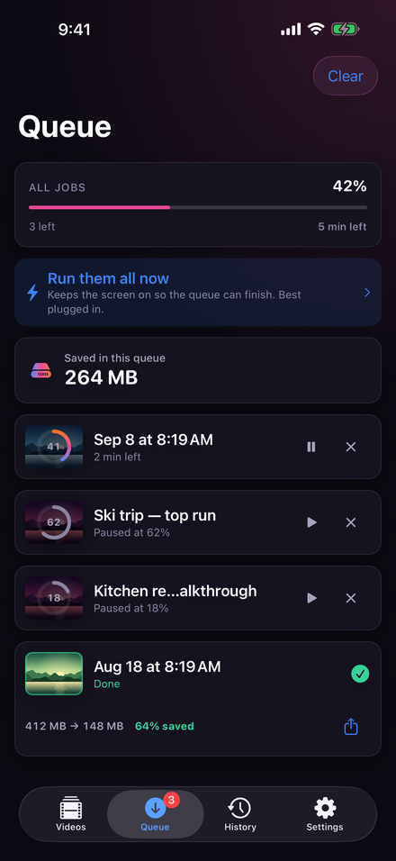
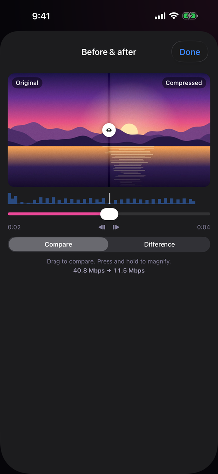
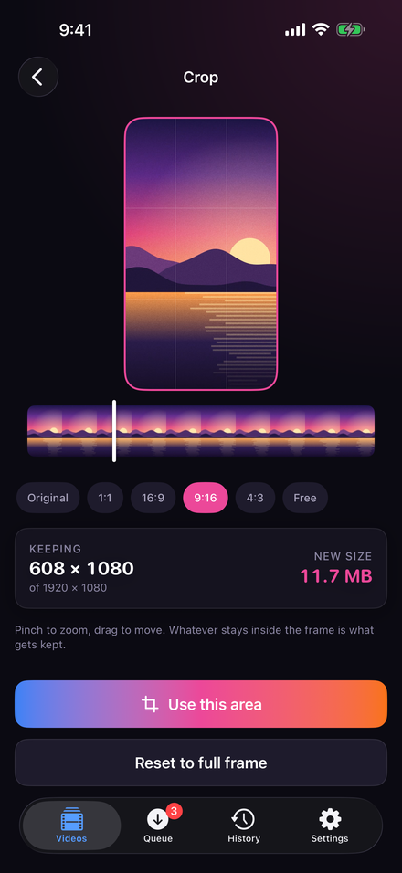

Compresseur vidéo pour iPhone, iPad et Mac
Plus d’espace,
même qualité
Votre iPhone déborde de vidéos. VideoSqueezer repère les clips qui prennent le plus de place, les rend considérablement plus légers tout en gardant l’image telle que vous l’avez filmée, et vous rend l’espace — le tout sur votre appareil.



Votre espace récupéré en trois étapes
1 · Analyser
Le Radar d’espace parcourt toute votre photothèque et classe chaque vidéo selon l’espace qu’elle vous rendrait. Aucun encodage, rien n’est modifié.
2 · Vérifier
Voyez la nouvelle taille de chaque vidéo avant de vous engager, et comparez avant et après sur la même image, de tout près.
3 · Libérer
Compressez, gardez la copie et laissez partir l’original. L’historique vous dit exactement combien d’espace vous avez vraiment récupéré.
Des fichiers plus légers, qui ressemblent toujours à vos vidéos

Jugez-en par vous-même
L’essentiel de ce qui rend une vidéo de téléphone si lourde, ce sont des données que vous ne verrez jamais. VideoSqueezer utilise le HEVC, un format efficace, conserve la résolution et la fréquence d’images, et s’adapte à chaque clip, car un coucher de soleil et un match de foot ne se compressent pas du tout de la même façon.
Ne nous croyez pas sur parole. Faites glisser la séparation sur la même image, maintenez pour agrandir à l’échelle réelle des pixels, et décidez avant qu’un seul original ne soit touché.
De l’espace en plus, sans crainte

Rien n’est perdu pour de bon
Les apps de nettoyage adorent les gros boutons rouges « Supprimer ». Pas VideoSqueezer. Les originaux de Photos attendent 30 jours dans Supprimés récemment ; ceux de Fichiers sont conservés là où vous pouvez les remettre en place.
Et le chiffre affiché est honnête : l’espace réellement libéré est séparé de celui que vous pourriez seulement libérer.
Conçu pour le grand ménage

Un cadrage pour chaque écran
Coupez ce dont vous n’avez pas besoin, sans rien perdre en qualité, et recadrez en 1:1, 16:9, 9:16, 4:3 ou dans n’importe quelle forme, d’un simple pincement. Réglez-le une fois et appliquez-le à toutes les vidéos importées.
Laissez tourner
Un écran fait pour les longues files : il continue de travailler, s’atténue jusqu’à une seule ligne et se met en pause de lui-même si le téléphone chauffe ou si la batterie faiblit.
Progression sur l’écran verrouillé
Suivez la file sur l’écran verrouillé et dans la Dynamic Island — avec ou sans vignette.
Résiste aux interruptions
Un plantage ou une fermeture forcée coûte au plus dix secondes de travail. La tâche reprend là où elle s’était arrêtée.
Viser une taille précise
Besoin de passer sous une limite pour un e-mail ou une messagerie ? Indiquez la taille, et la vidéo l’atteint.
Le HDR bien géré
Gardez le HDR tel qu’il a été filmé, convertissez une copie qui s’affiche bien partout ailleurs, ou faites les deux.
iPhone, iPad et Mac
Une file façon ordinateur sur iPad, le glisser-déposer, Raccourcis et Siri, et l’app tourne sur les Mac avec puce Apple.
Essai gratuit. Prix honnête.
Les clips jusqu’à 60 secondes sont gratuits, pour toujours, à tous les niveaux de qualité — pas une démo au rabais. Débloquez les vidéos de toute durée par un achat unique, ou à l’année si vous préférez.
Pas d’abonnement hebdomadaire. Pas de pub. Pas de compte. Une app de stockage dont vous n’avez pas à vous méfier.
Vos vidéos ne quittent jamais votre appareil
Aucun envoi. Aucune analyse. Aucun compte. Chaque image est lue, encodée et écrite sur votre propre iPhone, iPad ou Mac. Aucune publicité, aucun pistage et aucun serveur à nous avec qui communiquer — la politique de confidentialité dit exactement ce qui reste où. Et l’app peut se verrouiller derrière Face ID ou Touch ID pendant que la file continue.
Les questions qu’on nous pose
Mes vidéos seront-elles moins belles ?
En Qualité maximale, la différence ne se voit pas ; en Équilibré, le résultat est très proche de l’original. Vous pouvez comparer avant et après sur la même image avant de vous engager.
Combien d’espace vais-je récupérer ?
Cela dépend de la vidéo. Le Radar d’espace affiche l’estimation pour chacune avant toute modification — les clips 4K filmés sur iPhone sont souvent ceux qui rétrécissent le plus.
Mes vidéos sont-elles envoyées en ligne ?
Non. Tout se passe sur votre appareil. Il n’y a ni serveur, ni compte, ni analyse.
Que deviennent les originaux ?
Rien, tant que vous ne l’avez pas décidé. Les originaux de Photos vont dans Supprimés récemment pour 30 jours ; ceux de Fichiers sont conservés là où vous pouvez les remettre en place.
Est-ce un abonnement ?
Seulement si vous le souhaitez. Un achat unique débloque tout pour de bon, et il existe une option annuelle. Les clips jusqu’à 60 secondes sont toujours gratuits.
Pourquoi l’app reste-t-elle ouverte pendant qu’elle travaille ?
iOS arrête l’encodage vidéo environ trente secondes après qu’une app a quitté l’écran. Il y a donc un écran conçu pour ça : il fait avancer la file et se met en pause de lui-même si le téléphone chauffe.
VideoSqueezer
L’app parle onze langues : anglais, allemand, français, espagnol, italien, portugais brésilien, japonais, coréen, grec, ukrainien et russe.
VideoSqueezer
Plus d’espace, même qualité. Gratuit pour les clips jusqu’à 60 secondes, débloqué par un seul achat. iPhone, iPad et Mac avec puce Apple, rien n’est envoyé.